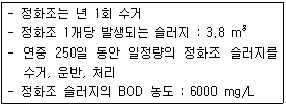
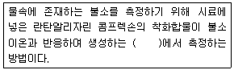
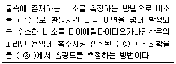
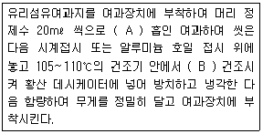
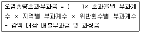
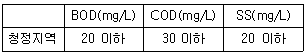
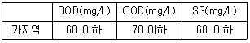
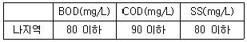
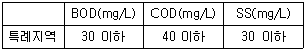
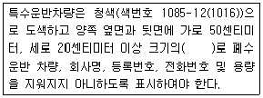

수질환경산업기사 (2012-08-26 기출문제)
1과목: 수질오염개론
1. 20℃ 5일 BOD가 50mg/L인 하수의 2일 BOD는? (단, 20℃, 탈산소계수 k = 0.23/day 이고, 자연대수기준)
- 21mg/L
- 24mg/L
- 27mg/L
- 29mg/L
(정답률: 75%)

2. 미생물에 관한 설명으로 옳지 않은 것은?
- 진핵세포는 핵막이 있으나 원핵세포는 없다.
- 세포소기관인 리보솜은 완벽세포에 존재하지 않는 다.
- 조류는 진핵미생물로 엽록체라는 세포소기관이 있다.
- 진핵세포는 유사분열을 한다.
(정답률: 60%)
3. 산과 염기에 관한 내용으로 옳지 않은 것은?
- 루이스(Lewis)는 전자O을 받는 화학증을 산이라 하였다.
- 아레니우스(Arihenius)는 수용액에서 양성자를 내어 놓는 물질을 염기라고 하였다.
- 염기는 그 수용액이 미끈 미끈하다.
- 염기는 붉은 리트머스 종이를 푸르게 한다.
(정답률: 78%)
4. 세균의 수가 mL당 1000 마리가 검출된 물을 염소농도 0.5ppm으로 소독하여 80% 죽이는데 시간이 10분이 소요되었다. 최종 세균수를 10 마리까지만 허용한다면 소독 시간이 몇 분 걸리겠는가? (단, 세균의 감소는 1차 반응식을 따른다.)
- 약 23분
- 약 29분
- 약 36분
- 약 38분
(정답률: 63%)
5. 어떤 폐수의 분석결과 COD가 450mg/L이고, BOD가 300mg/L 였다면 NBOCOD는? (단, 탈산소계수 K1=0.2/day, base는 상용대수)(오류 신고가 접수된 문제입니다. 반드시 정답과 해설을 확인하시기 바랍니다.)
- 약 76 mg/L
- 약 84 mg/L
- 약 117 mg/L
- 약 136 mg/L
(정답률: 61%)
6. 동점성계수의 단위로 적절한 것은?
- cm2/sec
- g/cm ㆍ sec
- g ㆍ cm/sec2
- cm/sec2
(정답률: 64%)
7. pH 2.8인 용맥중의 [H4]은 몇 mole/ℓ 인가?
- 1.58×10-3
- 2.58×10-3
- 3.58×10-3
- 4.58×10-3
(정답률: 75%)
8. Fungi가 심하게 번식하는 지대는? (단, Whippled의 4지대 기준)
- 분해지대
- 활발한 분해지대
- 회복지대
- 정수지대
(정답률: 58%)
9. 지하수의 특성을 지표수와 비교해서 설명한 것 중 옳지 않은 것은?
- 경도가 높다.
- 지정작용이 빠르다.
- 탁도가 낮다.
- 수온변동이 적다.
(정답률: 71%)
10. 25℃, 2기압의 압력에 있는 메탄가스 20kg의 부피는? (단, 이상 기체 상수(R) : 0.082 L ㆍ atm/moLㆍK)
- 2.14×10-3 L
- 2.34×10-3 L
- 1.24×10-3 L
- 1.53×10-3 L
(정답률: 59%)
11. 60000m3/day 상수를 살균하기 위하여 30kg/day의 염소가 주입되고 있는데 살균 접촉 후 잔류염소는 0.2mg/L이다. 염소 요구량(농도)은?
- 0.3mg/L
- 0.4mg/L
- 0.6mg/L
- 0.8mg/L
(정답률: 57%)
12. 다음의 클로이드에 관한 설명 중 옳지 않은 것은?
- 클로이드 입자들은 대단히 작아서 질량에 비해 표면적이 아주 크다.
- 클로이드 입자의 질량은 아주 작아서 중력의 영향은 중요하지 않다.
- 클로이드 입자들은 모두 전하를 띠고 있다.
- 클로이드를 제거하기 위해서는 클로이드의 연정성을 증가시켜야 한다.
(정답률: 61%)
13. 해수의 온도와 염분의 농도에 의한 밀도차에 의해 형성되는 해류는?
- 조류(tidal current)
- 쓰나미(tsunami)
- 심해류(deep ocean curtent)
- 살충류(upmelling)
(정답률: 74%)
14. 하천의 유기물 분해상태를 조사하기 위해 20℃에서 BOD를 측정 했을 때 K1=0, 13/day 이었다. 실제 하천온도가 18℃일 때 정확한 탈산소 계수(K1)는? (단, 온도보정계수는 1.047 이며 상용대수 기준)
- 0.113/day
- 0.119/day
- 0.123/day
- 0.125/day
(정답률: 70%)
15. 다음과 같은 용액을 만들었을 때 농도가 가장 큰 것은? (단, Na=23, S=32, Cl=35.5)
- 3.5 L 중 NaOH 150 g
- 30 mL 중 H2SO4 5.2 g
- 5L 중 NaCl 0.2 kg
- 100 mL 중 HCl 5.5 g
(정답률: 90%)
16. 다음 중 적조 발생의 환경적 요인과 가장 거리가 먼 것은?
- 바다의 수온구조가 안정화되어 물의 수직적 성층이 이루어질 때
- 플랑크톤의 번식에 충분한 공량과 영양염류가 공급될 때
- 태풍 등으로 급격하게 수역의 정체가 파괴되었을 때
- 해저에 빈산소 수괴가 형성되어 포자의 발아 촉진이 일어나고 퇴적층으로부터 부영양화의 원인물질이 용출 될 때
(정답률: 70%)
17. 수질오염물질과 그로 인한 공해병과의 관계를 잘못 짝지은 것은?
- Hg : 미나마타병
- Cr : 이따이 이따이병
- F : 반상치
- PCB : 카네미유증
(정답률: 69%)
18. Bacteria 18 g의 이론적인 COD는? (단, Bacteria의 분자식은(C6H7O2N), 질소는 암모니아로 분해됨을 기준으로 함)
- 약 25.5 g
- 약 28.8 g
- 약 32.3 g
- 약 37.5 g
(정답률: 66%)
19. Ca24가 40mg/L, Mg24가 36mg/L이 포함된 물의 경도는? (단, Ca의 원자량 40, Mg의 원자량 24)
- 150mg/L as CaOO3
- 200mg/L as CaOO3
- 250mg/L as CaOO3
- 300mg/L as CaOO3
(정답률: 71%)
20. 500mL 물에 125mg의 염이 녹아 있을 때 이 수용액의 농도를 %로 나타낸 값은?
- 0.125%
- 0.250%
- 0.0125%
- 0.0250%
(정답률: 52%)
2과목: 수질오염방지기술
21. 어느 폐수의 SS농도가 260mg/L이고, 유량이 1000m3/day이다. 폐수를 가압부상조로 처리할 대 A/S 비는? (단, 공기용해도 = 16.8mL/L, 가압 탱크내 압력 - 4기압, t = 0.5, 반송 없음)
- 9.5 × 10-2
- 8.4 × 10-2
- 7.3 × 10-2
- 6.8 × 10-2
(정답률: 67%)
22. 다음 흡착에 대한 설명 중 잘못된 것은?
- 흡착은 보통 물리적 흡착과 화학적 흡착으로 분류한다.
- 화학적 흡착은 주로 van der waals의 힘에 기인하여 비가역적이다.
- 흡착제는 단위 질량당 표면적이 큰 활성탄, 제몰라이트 등이 사용된다.
- 활성탄은 코코넛 껍질, 석탄 등을 탄화시킨 후 뜨거운 공기나 증기로 활성화시켜 제조한다.
(정답률: 74%)
23. 유입수의 유량이 360L/인 ㆍ 일, BOD5 농도가 200mg/L인 폐수를 처리하기 위해 완전혼합형 활성슬러지 처리장을 설계 하려고 한다. pilot plant를 이용하여 처리능력을 실험한 결과, 1차 침전지에서 유입수 BOD5 = 10mg/L, M.SS = 3000mg/L, ML.VSS는 MLSS의 75%이며 반응속도상수(K)가 0.93L/[(gML.VSS)hr] 이라면 일차반응일 경우 반응시간(hr)은? (단, 2차 침전지는 고려하지 않음)(오류 신고가 접수된 문제입니다. 반드시 정답과 해설을 확인하시기 바랍니다.)
- 4.5hr
- 5.4hr
- 6.7hr
- 7.9hr
(정답률: 54%)
24. 처리수의 BOD농도가 5mg/L인 폐수처리공정의 BOD제거효율은 1차 처리 40%, 2차 처리 80%, 3차 처리 18% 이다. 이 폐수처리공정에 유입되는 유입수의 BOD농도는?(오류 신고가 접수된 문제입니다. 반드시 정답과 해설을 확인하시기 바랍니다.)
- 39 mg/L
- 49 mg/L
- 59 mg/L
- 69 mg/L
(정답률: 74%)
25. 다음 중 응집침전에 사용되는 황산알루미늄 응집제에 대한 설명으로 틀린 것은?
- 결정(結晶)은 부식성이 있어 취급에 유의하여야 한다.
- 독성이 없어 대량 첨가가 가능하다.
- 여러 폐수에 적용된다.
- 생성된 플록이 가볍다.
(정답률: 49%)
26. 1000 mg/L의 SS를 함유하는 폐수가 있다. 90%의 SS 제거를 위한 침감속도를 측정해 보니 10 mm/min 이었다. 폐수의 양이 14400 m2 /day일 경우 SS 90% 제거를 위해 요구되는 침전지의 최소 수면적은?(오류 신고가 접수된 문제입니다. 반드시 정답과 해설을 확인하시기 바랍니다.)
- 900 m2
- 1000 m2
- 1200 m2
- 1500 m2
(정답률: 52%)
27. 고도수처리방법에 사용되는 각종 분리막에 관한 설명으로 틀린 것은?
- 역삼투의 구동력은 농도차이다.
- 한외여과의 구동력은 정수압차이다.
- 전기투석의 구동력은 전위차이다.
- 정밀여과의 막형태는 대칭형 다공성막이다.
(정답률: 69%)
28. 포기조의 MLSS 3000 mg/ℓ BOD-MLSS(부하) 0.2 kg/kg ㆍ 일의 조건에서 BOD 200 mg/ℓ 의 하수 750m3/일을 처리하고자 한다. 포기조의 크기는?
- 420 m3
- 350 m3
- 250 m3
- 200 m3
(정답률: 49%)
29. 96%의 수분을 함유하는 Sludge 100m3 을 탈수하여 수분 90%인 Sludge 를 얻었다. 탈수된 Sludge의 부피는? (단, 비중(1.0)은 변하지 않는 것으로 한다.)
- 40 m3
- 50 m3
- 60 m3
- 70 m3
(정답률: 68%)
30. BOD 1.0kg 제거에 필요한 산소량은 1.5 kg이다. 공기 1 m3 에 포함된 산소량이 0.277kg이라 하면 활성 슬러지에서 공기용해율이 6%(V/V%)일 때 BOD 1.0kg을 제거하는데 필요한 공기량은?
- 60.2m3
- 70.1m3
- 80.4m3
- 90.3m3
(정답률: 50%)
31. 하수처리를 위한 일차침전지의 설계기준 중 잘못된 것은?
- 유효수심은 2.5~4m를 표준으로 한다.
- 침전시간은 계획1일 최대오수량에 대하여 표면부하율과 유효수심을 고려하여 정하며 일반적으로 2~4 시간을 표준으로 한다.
- 표면적부하율은 계획1일 최대오수량에 대하여 분류식의 경우는 25~35m3/m2ㆍ day, 합류식의 경우는 35~70m3/m2ㆍ day 정도로 한다.
- 침전지 수면의 여유고는 40~60cm 정도로 한다.
(정답률: 63%)
32. 하수처리시 소독 방법인 자외선 소독의 장단점으로 틀린 것은? (단, 염소 소독과의 비교)
- 요구되는 공간이 작고 안전성이 높다.
- 소독이 성공적으로 되었는지 즉시 측정할 수 없다.
- 잔류효과, 잔류독성이 없다.
- 대장균살균을 위한 낮은 농도에서 virus, spores, cysts 등을 비활성화 시키는데 효과적이다.
(정답률: 54%)
33. 어떤 폐수를 중성으로 조절하는데 0.1% NaOH가 20mL소요되었다. 이 경우 NaOH 대신 1% Ca(OH)2를 사용하면 중성조절에 소요되는 1% Ca(OH)2량은? (단, Ca(OH)2 의 분자량은 74, NaOH는 40 이다)
- 1.9mL
- 3.6mL
- 5.8mL
- 7.5mL
(정답률: 54%)
34. 5단계 Bardenpho공정 중 호가조의 역할에 관한 설명으로 가장 적절한 것은?
- 인의 방출
- 인의 과잉 섭취
- 슬러지 라이징
- 탈질산화
(정답률: 74%)
35. 폭기조내의 MLSS가 4000mg/L, 폭기조 용적이 500m2 인 활성슬러지법에서 매일 25m3 의 폐슬러지를 뽑아 소화조로 보내 처리한다면 세포의 평균체류시간은? (단, 반송슬러지의 농도는 2%, 비중은 1.0, 유출수내 SS 농도 고려만함)
- 2일
- 3일
- 4일
- 5일
(정답률: 47%)
36. 토양처리 급속침투 시스템을 설계하여 1차 처리 유출수 100ℓ /sec를 160m3 /m2 ㆍ 년의 속도로 처리하고자 한다. 필요한 부지면적은? (단, 1일 24시간, 1년 365일로 환산한다.)
- 약 2 ha
- 약 20 ha
- 약 4 ha
- 약 40 ha
(정답률: 56%)
37. 원추형 바닥을 가진 원형의 일차침전지의 직경이 40m, 측벽 길이가 3m, 원추형 바닥의 길이가 1m인 경우, 하수처리 유량은? (단, 침전기 체류시간 6시간)
- 약 13500 m3 /d
- 약 15200 m3 /d
- 약 16800 m3 /d
- 약 19300 m3 /d
(정답률: 36%)
38. 하수관거가 매설되어 있지 않은 지역에 위치한 500개의 단독주택에서 생성된 정화조 슬러지를 소규모 하수처리장에 운반하여 처리할 경우, 이로 인한 BOD 부하량(kg 800/수거일)은?

- 33.6
- 45.6
- 56.3
- 63.2
(정답률: 52%)
39. 180g(초산(CH3COOH)이 35℃ 혐기성 소화조에서 분해할 때 발생되는 이론적인 CH4 의 양은 얼마인가?
- 약 45
- 약 68
- 약 76
- 약 83
(정답률: 46%)
40. 다음 중 보통 1차침전지에서 부유물질의 침전속도가 작게 되는 경우는? (단, Stokes 법칙 적용)
- 부유물질 입자의 밀도가 클 경우
- 부유물질 입자의 입경이 클 경우
- 처리수의 밀도가 작을 경우
- 처리수의 점성도가 클 경우
(정답률: 70%)
3과목: 수질오염공정시험방법
41. 시험에 적용되는 온도 표시에 관한 내용으로 옳지 않은 것은?
- 실온은 1~35℃
- 찬 곳은 4℃ 이하
- 온수는 60~70℃
- 상온은 15~25℃
(정답률: 83%)
42. 4각 퀘어의 수두 80cm, 절단의 폭 2.5m 이면 유량은? (단, 유량계수는 1.6 이다.)
- 약 2.9m3/min
- 약 3.5m3/min
- 약 4.7m3/min
- 약 5.3m3/min
(정답률: 63%)
43. 물벼룩을 이용한 급성 독성시험법에서 적용되는 치사(death) 용어의 정의로 옳은 것은?
- 일정 비율로 준비된 시료에 물벼룩을 투입하고 12시간 경과 후 시험용기를 살며시 움직여주고 15초 후 관찰했을 때 아무 반응이 없는 경우를 치사라 판정한다.
- 일정 비율로 준비된 시료에 불벼룩을 투입하고 12시간 경과 후 시험용기를 살며시 움직여주고 30초 후 관찰했을 때 아무 반응이 없는 경우를 치사라 판정한다.
- 일정 비율로 준비된 시료에 물벼룩을 투입하고 24시간 경과 후 시험용기를 살며시 움직여주고 15초 후 관찰 했을 때 아무 반응이 없는 경우를 치사라 판정한다.
- 일정 비율로 준비된 시료에 물벼룩을 투입하고 24시간 경과 후 시험용기를 살며시 움직여주고 30초 후 관찰 했을 때 아무 반응이 없는 경우를 치사라 판정한다.
(정답률: 73%)
44. 다음은 자외선/가시선 분광법을 적용한 불소 측정 방법이다. ( )안에 옳은 내용은?

- 적색의 복합 착화합물의 흡광도를 560nm
- 청색의 복합 착화합물의 흡광도를 620nm
- 황갈색의 복합 착화합물의 흡광도를 450nm
- 적자색의 복합 착화합물의 흡광도를 520nm
(정답률: 64%)
45. 노말렉산 추출물질 측정 개요에 관한 내용으로 옳지 않은 것은?
- 동상 유분의 성분별 선택적 정량이 용이하다.
- 최종 무게 측정을 방해할 가능성이 있는 입자가 존재하는 경우 0.45μm 여과지로 여과한다.
- 정량한계는 0.5mg/L 이다.
- 시료를 pH 4 이하의 산성으로 하여 노말헥산층에 용해되는 물질을 노말헥산으로 추출하고 노말헥산을 증발시킨 잔류물의 무게를 구한다.
(정답률: 60%)
46. 개수로의 평균 단면적이 1.6m2 이고, 부표를 사용하여 10m 구간을 흐르는데 걸리는 시간을 측정한 결과 5초(sec)였을 때 이 수로의 유량은? (단, 수로의 구성, 재질, 수로단면의 형상, 기울기 등이 일정하지 않은 계수로의 경우 기준)
- 144 m3/min
- 154 m3/min
- 164 m3/min
- 174 m3/min
(정답률: 64%)
47. 채취된 시료를 규정된 보존방법에 따라 조치했다면 최대 보존기간이 가장 짧은 측정항목은?
- 6가 크롬
- 노말헥산추출물질
- 클로로필a
- 색도
(정답률: 40%)
48. 수소이온농도 측정을 위한 표준용액 중 거의 중성 pH값을 나타내는 것은?
- 인산염 표준용액
- 수산염 표준용액
- 탄산염 표준용액
- 프탈산염 표준용액
(정답률: 61%)
49. 납에 적용 가능한 시험방법으로 옳지 않은 것은?(단, 수질오염공정시험기준 기준)
- 유도결합플라스마 - 원자발광분광법
- 원자형광법
- 양극벗감전압전류법
- 유도결합플라스마 - 질량분석법
(정답률: 56%)
50. 시료채취시 유의사항으로 옳지 않은 것은?
- 휘발성유기화합물 분석용 시료를 채취할 때에는 뚜껑의 격막을 만지지 않도록 주의 하여야 한다.
- 환원성 물질 분석용 시료의 채취병을 뒤집어 공기 방울이 확인되면 다시 채취하여야 한다.
- 천부층 지하수의 시료채취시 고속양수펌프를 이용하여 신속히 시료를 채취하여 시료 영향을 최소화한다.
- 시료채취시에 시료채취시간, 보존제 사용여부, 매질 등 분석결과에 영향을 미칠 수 있는 사항을 기재하여 분석자가 참고할 수 있도록 한다.
(정답률: 71%)
51. 측정항목에 따른 시료의 보존방법이 다른 것으로 짝지어진 것은?
- 부유물질 - 색도
- 생물화학적산소요구량 - 전기전도도
- 아질산성 질소 - 음이온계면활성제
- 유기인 - 연삼염인
(정답률: 50%)
52. 물속의 냄새 측정시 잔류염소 냄새는 측정에서 제외한다. 잔류염소 제거를 위해 첨가하는 시액은?
- 티오황산나트륨용액
- 과망간산칼륨용액
- 아스코르빈산염모늄용액
- 질산암모늄용액
(정답률: 75%)
53. 다음은 비소를 자외선/가시선 분광법을 적용하여 측정할 때의 측정방법이다. ( )안에 옳은 내용은?

- ① 3가 비소 ② 첨색 ③ 620nm
- ① 3가 비소 ② 적자색 ③ 530nm
- ① 6가 비소 ② 첨색 ③ 620nm
- ① 6가 비소 ② 적자색 ③ 530nm
(정답률: 85%)
54. “함량으로 될 때까지 건조한다” 라는 용어의 정의로 옳은 것은?
- 같은 조건에서 1시간 더 건조했을 때 전후 무게 차가 g당 0.1mg 이하일 때
- 같은 조건에서 1시간 더 건조했을 때 전후 무게 차가 g당 0.3mg 이하일 때
- 같은 조건에서 1시간 더 건조했을 때 전후 무게 차가 g당 0.5mg 이하일 때
- 같은 조건에서 1시간 더 건조했을 때 전후 무게 차가 g당 1.0mg 이하일 때
(정답률: 73%)
55. 다음은 부유물질을 측정 분석절차에 관한 내용이다. ( )안에 옳은 내용은?

- A:2회, B:1시간
- A:2회, B:2시간
- A:3회, B:1시간
- A:3회, B:2시간
(정답률: 38%)
56. 6가 크롬(c2B+)의 측정방법과 가장 거리가 먼 것은? (단, 수질오염공정시험기준 기준)
- 불꽃 원자흡수 분광광도입
- 양극벗김전압전류법
- 자외선/가시선 분광법
- 유도결합플라스마 원자별광분광법
(정답률: 62%)
57. 식물성 플랑크톤을 측정하기 위한 시료 채취시 창성채집에 이용하는 것은?
- 반돈 채수기
- 플랑크톤 채수병
- 플랑크톤 네트
- 플랑크톤 박스
(정답률: 71%)
58. 시안분석을 위하여 채취한 시료 보존방법에 관한 내용 중 옳지 않은 것은?
- 시안 분석용 시료에 잔류염소가 공존할 경우 시료 1L 당 아스코반산 1g을 첨가한다.
- 시안 분석용 시료에 산화제가 공존할 경우에는 시안을 파괴할 수 있으므로 채수 즉시 황산 암모늄철을 시료 1L 당 0.6g 첨가한다.
- NaOH로 pH 12 이상으로 하며 4℃에서 보관한다.
- 최대 보존 기간은 14일 정도이다.
(정답률: 42%)
59. 시험에 적용되는 용어의 정의로 옳지 않는 것은?
- 기밀용기 : 취급 또는 저장하는 동안에 밖으로부터의 공기 또는 다른 가스가 침입하지 아니하도록 내용물을 보호하는 용기
- 정밀히 단다 : 규정된 양의 시료를 취하여 화학저울 또는 미량저울로 청령함을 말한다.
- 정확히 취하여 : 규정된 양의 액체를 부피피펫으로 눈금까지 취하는 것을 말한다.
- 감엽 : 따로 규정이 없는 한 15mmH2O 이하를 뜻한다.
(정답률: 76%)
60. 자외선/가시선 분광법으로 페놀류를 측정할 때 간섭물질인 시료 내 오일과 타르 성분의 제거방법으로 옳은 것은?
- 수산화나트륨을 사용하여 시료의 pH 9~10으로 조절한 후 클로로포롬으로 용매 추출하여 제거한다.
- 수산화나트륨을 사용하여 시료의 pH 12-12.5로 조절한 후 클로로포롬으로 용매 추출하여 제거한다.
- 붉은 황산을 사용하여 시료의 pH 4 이하로 조절한 후 클로로포롬으로 용매 추출하여 제거한다.
- 붉은 황산을 사용하여 시료의 pH 2 이하로 조절한 후 클로로포롬으로 용매 추출하여 제거한다.
(정답률: 56%)
4과목: 수질환경관계법규
61. 대권역 수질 및 수생태계 보전 계획에 포함되어야 하는 사항과 가장 거리가 먼 것은?
- 오염원별 수질오염 저감시설 현황
- 점오염원, 비점오염원 및 기타 수질오염원에 의한 수질 오염물질 발생량
- 상수판 및 물 이용현황
- 수질오염 예방 및 저감대책
(정답률: 64%)
62. 다음 중 방류수수질기준초과율별 부과계수가 틀린것은?
- 초과율이 30% 이상 40% 미만인 경우 부과계수는 1.6을 적용한다.
- 초과율이 50% 이상 60% 미만인 경우 부과계수는 2.0을 적용한다.
- 초과율이 70% 이상 80% 미만인 경우 부과계수는 2.4을 적용한다.
- 초과율이 90% 이상 100% 미만인 경우 부과계수는 2.6을 적용한다.
(정답률: 65%)
63. 수질 및 수생태계 보전에 관한 법률이 사용하고 있는 용어의 정의와 가장 거리가 먼 것은?
- 점오염원 : 폐수배출시설, 하수발생시설, 축사 등으로서 일정한 장소에서 수질오염물질을 배출하는 배출원
- 배정오염원 : 도시, 도로, 농지, 산지, 공사장 등으로서 불특정 장소에서 불특정하게 수질오염물질을 배출하는 배출원
- 폐수무방류배출시설 : 폐수배출시설에서 발생하는 폐수를 당해 사업장 안에서 수질오염방지시설을 이용하여 처리하거나 동일 배출시설에 재이용하는 등 공공 수역으로 배출하지 아니하는 폐수배출시설
- 폐수 ; 물에 액체성 또는 고체성의 수질오염물질이혼입되어 그대로 사용할 수 없는 물
(정답률: 54%)
64. 비점오염원의 변경신고사항과 가장 거리가 먼 것은?
- 상호, 사업장 위치 및 장비(예비차량 포함)가 변경되는 경우
- 비점오염원 또는 비점오염저감시설의 전부 또는 일부를 폐쇄하는 경우
- 비점오염저감시설의 종류, 위치, 용량이 변경되는 경우
- 총 사업면적, 개발면적 또는 사업장 부지면적이 처음 신고면적의 100분의 15 이상 증가하는 경우
(정답률: 72%)
65. 수질오염경보 중 조류경보의 단계가 조류주의보일 때 수면관리자의 조치사항으로 옳은 것은?
- 주 1회 이상 시료 채취 및 분석
- 주변 오염원에 대한 철저한 지도, 단속 및 수상스키, 수영, 낚시, 취사 등의 활동 자제 권고
- 조류 증식 수심 이하로 취수구 이동
- 취수구와 조류가 심한 지역에 대한 방어막 설치 등 조류 제거조치 실시
(정답률: 58%)
66. 수질오염감사경보에 관한 내용으로 측정항목별 측정값이 관심단계 이하로 낮아진 경우의 수질오염감시 경보단계는?
- 경계
- 주의
- 해제
- 관찰
(정답률: 82%)
67. 낚시제한구역에서의 낚시방법의 제한사항에 관한 내용으로 틀린 것은?
- 1명당 4대 이상의 낚시대를 사용하는 행위
- 1개의 낚시대에 5개 이상의 낚시바늘을 사용하는 행위
- 쓰레기를 버리거나 취사행위를 하거나 화장실이 아닌 곳에서 대, 소변을 보는 등 수질오염을 일으킬 우려가 있는 행위
- 낚시바늘에 끼워서 사용하지 아니하고 물고기를 유인하기 위하여 떡밥, 어분 등을 던지는 행위
(정답률: 64%)
68. 오염총량관리 조사 ㆍ 연구반을 구성, 운영하는 곳은?
- 국립환경과학원
- 유역환경청
- 한국환경공단
- 시도보건환경연구원
(정답률: 74%)
69. 수질오염경보의 종류별 경보단계 및 그 단계별 발령 해제기준에 관한 내용 중 조류경보의 단계가 [조류대발생]인 경우의 발령기준은?
- 2회 연속 재취 시 클로로필-a 농도 100mg/m3 이상이고 남조류의 세포 수가 100,000세포/mL 이상인 경우
- 2회 연속 채취 시 클로로필-a 농도 100mg/m3 이상이고 남조류의 세포 수가 1,000,000세포/mL 이상인 경우
- 2회 연속 채취 시 클로로필-a 농도 1000mg/m3 이상이고 남조류의 세포 수가 100,000세포/mL 이상인 경우
- 2회 연속 채취 시 클로로필-a 농도 1000mg/m3 이상이고 남조류의 세포 수가 1,000,000세포/mL 이상인 경우
(정답률: 46%)
70. 종말처리시설에 유입된 수질오염물질을 최종 방류구를 거치지 아니하고 배출하거나 최종 방류구를 거치지 아니하고 배출할 수 있는 시설을 설치하는 행위를 한자에 대한 벌칙기준은?
- 3년 이하의 징역 또는 1천5백만원 이하의 벌금
- 3년 이하의 징역 또는 2천만원 이하의 벌금
- 5년 이하의 징역 또는 3천만원 이하의 벌금
- 7년 이하의 징역 또는 5천만원 이하의 벌금
(정답률: 65%)
71. 오염측량관리기본계획 수립시 포함되어야 하는 사항이 아닌 것은?
- 당해 지역 개발 현황
- 지방자치단체별, 수계구간별 오염부하량의 할당
- 관할 지역에서 배출되는 오염부하량의 총량 및 저감계획
- 당해 지역 개발계획으로 인하여 추가로 배출되는 오염부하량 및 그 저광계획
(정답률: 50%)
72. 수질 및 수생태계 환경기준 중 하천에서 사람의 건강보호기준으로 틀린 것은?
- 카드륨 : 0.⑤mg/L 이하
- 바소 : 0.⑤mg/L 이하
- 납 : 0.⑤mg/L 이하
- 6과 크롬: mg/L 이하
(정답률: 50%)
73. 다음은 오염총량초과부관금의 산정방법이다. ( )안에 옳은 내용은?

- 초과배출이익
- 초과오염배출량
- 연도별 부과금 단가
- 오염부하량 단가
(정답률: 44%)
74. 1일 폐수배출량이 2,000m3 이상인 폐수배출시설의 지역별, 항목별 배출허용기준으로 틀린 것은?




(정답률: 52%)
75. 다음의 수질오염방지시설 중 화학적 처리시설인 것은?
- 혼합시설
- 폭기시설
- 응집시설
- 살균시설
(정답률: 77%)
76. 사업자 및 배출시설과 방지시설에 종사하는 자는 배출시설과 방지시설의 정상적인 운영, 관리를 위한 환경 기술인의 업무를 방해하여서는 아니 되며, 그로부터 업무수행에 필요한 요정을 받은 때에는 정당한 사유가 없는 한 이에 응하여야 한다. 이를 위반하여 환경기술인의 업무를 방해하거나 환경기술인의 요청을 정당한 사유없이 거부한 자에 대한 벌칙 기준은?
- 100만원 이하의 벌금에 처한다.
- 200만원 이하의 벌금에 처한다.
- 300만원 이하의 벌금에 처한다.
- 500만원 이하의 벌금에 처한다.
(정답률: 90%)
77. 비점오염저감시설 중 자연형 시설이 아닌 것은?
- 식생형시설
- 인공습지
- 여과형시설
- 저류시설
(정답률: 72%)
78. 수질 및 수생태계 정책심의 위원회 위원(위원장, 부위원장 포함)으로 가장 거리가 먼 것은?
- 환경부장관
- 국토해양부장관
- 환경부장관이 위촉하는 수질 및 수생태계 관련 전문가 3인
- 산림청장
(정답률: 50%)
79. 다음은 폐수처리업의 등록기준 중 패수재이용업의 운반 장비에 관한 기준이다. ( )안에 옳은 내용은?

- 노란색 바탕에 청색 글씨
- 노란색 바탕에 검은색 글씨
- 흰색 바탕에 청색 글씨
- 흰색 바탕에 검은색 글씨
(정답률: 70%)
80. 위반횟수별 부과계수에 관한 내용 중 맞는 것은?(단, 초과배출부과금 산정 기준)
- 2종 사업장 : 처음 위반의 경우 1.6
- 3종 사업장 : 처음 위반의 경우 1.4
- 4종 사업장 : 처음 위반의 경우 1.3
- 5종 사업장 : 처음 위반의 경우 1.1
(정답률: 49%)
BOD = BOD₀e^(-kt)
여기서 BOD₀는 초기 BOD, t는 시간, k는 탈산소계수이다. 이 식을 이용하여 5일 동안의 BOD를 구하면 다음과 같다.
50mg/L = BOD₀e^(-0.23/day x 5 days)
BOD₀ = 131.5mg/L
따라서 2일 BOD는 다음과 같이 구할 수 있다.
BOD = 131.5mg/L x e^(-0.23/day x 2 days)
BOD = 27mg/L
따라서 정답은 "27mg/L"이다.